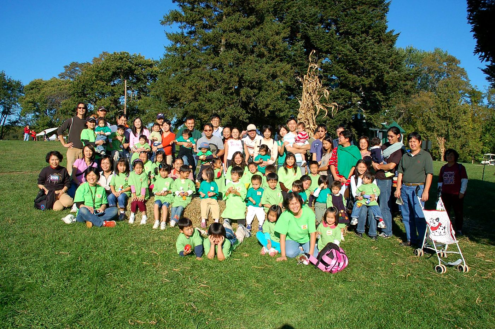

ABOUT 關於我們 · SINCE 1983
華府台灣學校
Washington DC Taiwanese School · Hoahuo Taioaan Haghau · Hua-fu Taiwan Hsueh-hsiao
In 1983, a group of Taiwanese American families in the Washington area founded the Washington DC Taiwanese Language School — later renamed WDCTS — to pass Taiwanese languages, heritage and ways of life to the next generation, and to invite our American neighbors to experience them too.
The first programs covered literature, martial arts and recreation 文、武、康樂. Today we teach students from 18 months to adults every Sunday afternoon in Potomac, MD, with fall and spring semesters.
